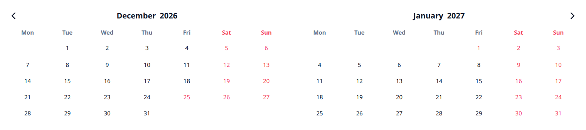
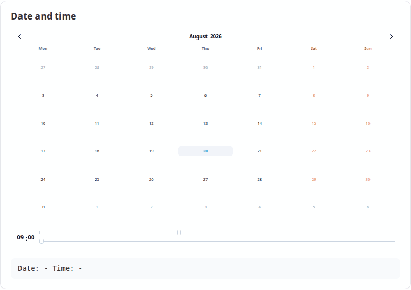
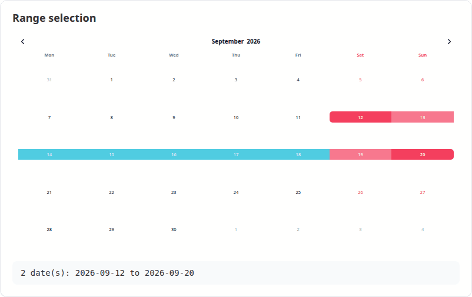

An htmlwidget bringing Vanilla Calendar Pro to R and Shiny — a modern, dependency-free calendar, date picker and time picker, configured from R.

Bundles Vanilla Calendar Pro 3.2.0. No internet connection, no CDN and no JavaScript build step needed.
Install
remotes::install_github("ESCRI11/vanilla-calendar-r")Use
Any option from the Vanilla Calendar Pro reference is passed straight through as a named list:
VanillaCalendar(
options = list(
type = "default",
locale = "en",
selectionDatesMode = "multiple",
selectedDates = Sys.Date(),
selectedTheme = "light"
),
width = "500px",
height = "400px"
)R values are adapted for you: Date and POSIXct become the "YYYY-MM-DD" strings the library expects, and options that must be JSON arrays are boxed, so a single date works where the library wants a list. Misspelled option names warn rather than being silently ignored.
In Shiny
Three steps: VanillaCalendarOutput() in the UI, renderVanillaCalendar() in the server, and read the dates from input$<id>_selected. That is a complete app:
library(shiny)
library(VanillaCalendar)
ui <- fluidPage(
titlePanel("Pick a date"),
VanillaCalendarOutput("cal", height = "400px"),
textOutput("chosen")
)
server <- function(input, output) {
output$cal <- renderVanillaCalendar(VanillaCalendar())
output$chosen <- renderText({
if (length(input$cal_selected) == 0) "Nothing picked yet."
else format(input$cal_selected, "%A, %d %B %Y")
})
}
shinyApp(ui, server)input$cal_selected is a Date vector — Date(0) when nothing is selected, so format() and min() never blow up on an empty calendar. Options change what the user can do without changing any of the structure above:
# a date range instead of one date
output$cal <- renderVanillaCalendar(
VanillaCalendar(list(selectionDatesMode = "multiple-ranged"))
)
# a text box with a popup, instead of a block of calendar
output$cal <- renderVanillaCalendar(
VanillaCalendar(list(inputMode = TRUE), height = "auto")
)Both apps ship with the package, so you can run them before writing anything:
# the app above, in full
shiny::runApp(system.file("examples/minimal", package = "VanillaCalendar"))
# the demo every screenshot below comes from
shiny::runApp(system.file("examples/gallery", package = "VanillaCalendar"))Selecting dates
selectionDatesMode takes "single", "multiple" or "multiple-ranged". Whatever the user picks arrives in input$<id>_selected as a Date vector — length 0 when nothing is selected, so format() and as.Date() never blow up on an empty calendar.

output$cal <- renderVanillaCalendar(
VanillaCalendar(list(selectionDatesMode = "multiple-ranged"))
)
output$out <- renderText(paste(format(input$cal_selected), collapse = " to "))A date picker, not a wall of calendar
Set inputMode = TRUE and the widget renders a text box that opens the calendar as a popup, filling the box with the chosen date. Pair it with height = "auto". See the upstream input mode docs.

VanillaCalendar(
options = list(inputMode = TRUE, selectionDatesMode = "single"),
height = "auto"
)Time
selectionTimeMode = 24 (or 12) adds a time picker below the dates. The chosen time arrives in input$<id>_time as a string such as "14:30". The timeMinHour, timeMaxHour and timeStepMinute options constrain it.

VanillaCalendar(list(selectionTimeMode = 24, selectedTime = "09:00"))Months and years
Clicking the month or the year opens a picker for it. Both are reported to Shiny, with months as 1-12 rather than the JavaScript 0-11.

Themes, changed without re-rendering
VanillaCalendarProxy() reaches a calendar that is already on the page, so options can be changed in place — the calendar keeps its selection, position and focus instead of flickering back to its initial state. Only the parts you are actually setting change; pass reset to clear anything else.

observeEvent(input$theme, {
vcSet(VanillaCalendarProxy("cal"), list(selectedTheme = input$theme))
})The proxy verbs mirror the library’s instance methods:
| Function | Does |
|---|---|
vcSet(proxy, options, reset) |
Apply new options |
vcUpdate(proxy, reset) |
Re-render with the current options |
vcShow(proxy) / vcHide(proxy)
|
Show or hide a popup calendar |
vcDestroy(proxy) |
Remove the calendar |
selectedTheme accepts "light", "dark" or "system". In system mode the theme is read from the attribute named by themeAttrDetect, which defaults to "html[data-theme]"; bslib apps should set themeAttrDetect = "html[data-bs-theme]" to follow the app.
Shiny inputs
For an output with id "cal":
| Input | Type | Set when |
|---|---|---|
input$cal_selected |
Date vector |
A date is clicked |
input$cal_selected_month |
integer, 1-12 | A month is chosen |
input$cal_selected_year |
integer | A year is chosen |
input$cal_displayed |
Date, first of the month |
The arrows are used |
input$cal_time |
character, e.g. "14:30"
|
The time changes |
input$cal_week |
list of week and year
|
A week number is clicked |
input$cal_ready |
TRUE |
The calendar has initialised |
Custom JavaScript
Callbacks are options like any other, passed with htmlwidgets::JS(). They run in addition to the built-in handlers above, so adding one does not cost you the matching Shiny input:
VanillaCalendar(list(
onClickDate = htmlwidgets::JS("function(self) { console.log(self.context.selectedDates); }")
))The full callback list — onClickWeekDay, onCreateDateEls, onChangeTime and the rest — is in the upstream reference.
Learn more
-
vignette("VanillaCalendar")— a guided tour of the widget -
vignette("shiny")— using the widget in Shiny apps - Vanilla Calendar Pro documentation — the option reference this package passes through to